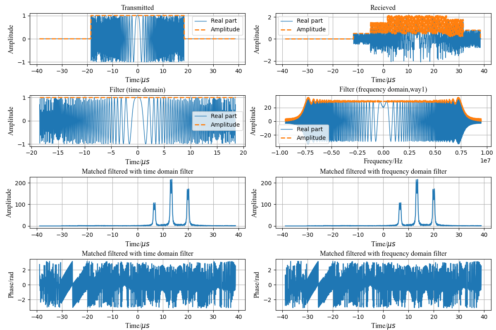

torchsar.sharing package¶
Submodules¶
torchsar.sharing.antenna_pattern module¶
- torchsar.sharing.antenna_pattern.antenna_pattern_azimuth(Wl, La, A)¶
torchsar.sharing.beamwidth_footprint module¶
- torchsar.sharing.beamwidth_footprint.azimuth_beamwidth(Wl, La)¶
- torchsar.sharing.beamwidth_footprint.azimuth_footprint(R, Wl, La)¶
- torchsar.sharing.beamwidth_footprint.compute_range_beamwidth2(Nr, Fsr, H, Aon)¶
computes beam angle in range direction
- torchsar.sharing.beamwidth_footprint.cr_footprint(Wl, H, La, Ad)¶
cross range (azimuth) foot print
\[R_{CR} \approx \frac{\lambda}{L_a}\frac{H}{{\rm cos}\theta_d} \]
torchsar.sharing.chirp_signal module¶
- class torchsar.sharing.chirp_signal.Chirp(Tp, K, Fc=0.0, a=1.0)¶
Bases:
torch.nn.modules.module.Module- recv(t, g, r)¶
- tran(t)¶
- torchsar.sharing.chirp_signal.chirp_recv(t, Tp, K, Fc, a=1.0, g=1.0, r=1000.0)¶
- torchsar.sharing.chirp_signal.chirp_tran(t, Tp, K, Fc, a=1.0)¶
torchsar.sharing.compute_sar_parameters_func module¶
- torchsar.sharing.compute_sar_parameters_func.compute_sar_parameters(pdict, islog=False)¶
torchsar.sharing.doppler_centroid_estimation module¶
- torchsar.sharing.doppler_centroid_estimation.abdce_wda_opt(Sr, Fsr, Fsa, Fc, ncpb=None, tr=None, isfftr=False, isplot=False, islog=False)¶
Absolute and baseband doppler centroid estimation by wavelength diversity algorithm
Absolute and baseband doppler centroid estimation by Wavelength Diversity Algorithm (WDA).
<<合成孔径雷达成像_算法与实现>> p350.
- Parameters
Sr (2d-tensor) – SAR signal \(N_a×N_r\) in range frequency domain.
Fsr (float) – Sampling rate in range, unit Hz.
Fsa (float) – Sampling rate in azimuth, unit Hz.
Fc (float) – Carrier frequency, unit Hz.
ncpb (tuple or list, optional) – Number of cells per block, so we have blocks (int(Na/ncpb[0])) × (int(Nr/ncpb[1])) (the default is [Na, Nr], which means all).
tr (1d-tensor, optional) – Time in range (the default is None, which linspace(0, Nr, Nr)).
isplot (bool, optional) – Whether to plot the estimation results (the default is False).
isfftr (bool, optional) – Whether to do FFT in range (the default is False).
- Returns
fadc (2d-tensor) – Absolute doppler centroid frequency, which has the size specified by
ncpb.fbdc (2d-tensor) – Baseband doppler centroid frequency, which has the size specified by
ncpb.Ma (2d-tensor) – Doppler ambiguity number, which has the size specified by
ncpb.
- torchsar.sharing.doppler_centroid_estimation.abdce_wda_ori(Sr, Fsa, Fsr, Fc, rate=0.9, isplot=False, islog=False)¶
Absolute and baseband doppler centroid estimation by wavelength diversity algorithm
Absolute and baseband doppler centroid estimation by Wavelength Diversity Algorithm (WDA).
<<合成孔径雷达成像_算法与实现>> p350.
- torchsar.sharing.doppler_centroid_estimation.bdce_api(Sr, Fsa, isplot=False)¶
Baseband doppler centroid estimation by average phase increment
Baseband doppler centroid estimation by average phase increment.
- torchsar.sharing.doppler_centroid_estimation.bdce_madsen(Sr, Fsa, isplot=False)¶
Baseband doppler centroid estimation by madsen
Baseband doppler centroid estimation bymadsen.
- torchsar.sharing.doppler_centroid_estimation.bdce_sf(Sr, Fsa, Fsr, rdflag=False, Nroff=0, isplot=False)¶
Baseband doppler centroid estimation by spectrum fitting
Baseband doppler centroid estimation by spectrum fitting.
- Parameters
Sr (numpy array) – SAR signal \(N_a×N_r\) in range-doppler domain (range frequency domain).
Fsa (float) – Sampling rate in azimuth
rdflag (bool) – Specifies whether the input SAR signal is in range-doppler domain. If not,
dce_sf()excutes FFT in range direction.isplot (bool) – Whether to plot the estimated results.(Default: False)
- torchsar.sharing.doppler_centroid_estimation.fullfadc(fdc, shape)¶
torchsar.sharing.doppler_rate_estimation module¶
- torchsar.sharing.doppler_rate_estimation.dre_geo(Wl, Vr, R, Ar=0.0)¶
doppler rate estimation based on geometry
doppler rate estimation based on geometry
torchsar.sharing.matched_filter module¶
- torchsar.sharing.matched_filter.chirp_mf_fd(K, Tp, Fs, Fc=0.0, Nfft=None, mod='way1', win=None, ftshift=False, scale=False, device='cpu')¶
Summary
- Parameters
K (int) – The chirp rate.
Tp (float) – The pulse width.
Fs (float) – The sampling rate.
Fc (float, optional) – The center frequency.
Nfft (int or None, optional) – The number of points for doing FFT.
mod (str, optional) – The mode of matched filter.
win (tensor or None, optional) – The window function.
ftshift (bool, optional) – Shift the zero-frequecy in center?
scale (bool, optional) – Scale the filter?
device (str, optional) – Specifies the device to be used for computing.
- Returns
The matched filter tensor.
- Return type
tensor
- torchsar.sharing.matched_filter.chirp_mf_td(K, Tp, Fs, Fc=0.0, Ns=None, mod='conv', scale=False, device='cpu')¶
Generates matched filter of chirp signal in time domain
Generates matched filter of chirp signal in time domain.
- Parameters
K (int) – The chirp rate.
Tp (float) – The pulse width.
Fs (float) – The sampling rate.
Fc (float, optional) – The center frequency.
mod (str, optional) – The mode of filter,
'conv'or'corr'scale (bool, optional) – Whether to scale the amplitude of the filter.
device (str, optional) – Specifies the device to be used for computing.
- Returns
The matched filter tensor.
- Return type
tensor
Examples
Do Pulse Compression with time/frequency domain filters.
The results shown in the above figure can be obtained by the following codes.
#!/usr/bin/env python # -*- coding: utf-8 -*- # @Date : 2019-02-18 10:14:12 # @Author : Yan Liu & Zhi Liu (zhiliu.mind@gmail.com) # @Link : http://iridescent.ink # @Version : $1.0$ import torch as th import torchbox as tb import torchsar as ts import matplotlib.pyplot as plt from torchbox.utils.const import * from torchbox.dsp.ffts import fft, ifft, fftfreq mftdmod = 'conv' mffdmod = 'way1' ftshift = True # ===Generate tansmit= ted and recieved signals # ---Setting parameters R = [1.e3, 2.e3, 3.e3] G = [0.5, 1.0, 0.8] EPS = 2.2e-32 K = 4.1e+11 Tp = 37.0e-06 B = abs(K) * Tp alp = 1.24588 # 1.1-1.4 Fs = alp * B Fc = 5.3e9 Fc = 0. Koff = 0. Koff = 1.e10 Fcoff = 0. # Fcoff = 1.e8 Ts = 2.1 * Tp Ns = round(Fs * Ts) Nh = round(Fs * Tp) t = th.linspace(-Ts / 2., Ts / 2, Ns) f = fftfreq(Ns, Fs, norm=False, shift=ftshift) N = Ns + Nh - 1 Nfft = 2**tb.nextpow2(N) # ---Transmitted signal St = ts.chirp_tran(t, Tp, K, Fc, a=1.) # ---Recieved signal Sr = ts.chirp_recv(t, Tp, K, Fc, a=1., g=G, r=R) # --- chirp = ts.Chirp(Tp=Tp, K=K, Fc=Fc, a=1.) St = chirp.tran(t) Sr = chirp.recv(t, g=G, r=R) # ---Frequency domain Yt = fft(St, dim=0, shift=ftshift) Yr = fft(Sr, dim=0, shift=ftshift) fontsize = 12 fonttype = 'Times New Roman' fontdict = {'family': fonttype, 'size': fontsize} # ---Plot signals plt.figure(figsize=(10, 8)) plt.subplot(221) plt.plot(t * 1e6, th.real(St)) plt.grid() plt.title('Real part', fontdict=fontdict) plt.xlabel(r'Time/$\mu s$', fontdict=fontdict) plt.ylabel('Amplitude', fontdict=fontdict) plt.xticks(fontproperties=fonttype, size=fontsize) plt.yticks(fontproperties=fonttype, size=fontsize) plt.subplot(222) plt.plot(t * 1e6, th.imag(St)) plt.grid() plt.title('Imaginary part', fontdict=fontdict) plt.xlabel(r'Time/$\mu s$', fontdict=fontdict) plt.ylabel('Amplitude', fontdict=fontdict) plt.xticks(fontproperties=fonttype, size=fontsize) plt.yticks(fontproperties=fonttype, size=fontsize) plt.subplot(223) plt.plot(f, th.abs(Yt)) plt.grid() plt.title('Spectrum', fontdict=fontdict) plt.xlabel('Frequency/Hz', fontdict=fontdict) plt.ylabel('Amplitude', fontdict=fontdict) plt.xticks(fontproperties=fonttype, size=fontsize) plt.yticks(fontproperties=fonttype, size=fontsize) plt.subplot(224) plt.plot(f, th.angle(Yt)) plt.grid() plt.title('Spectrum', fontdict=fontdict) plt.xlabel('Frequency/Hz', fontdict=fontdict) plt.ylabel('Phase', fontdict=fontdict) plt.xticks(fontproperties=fonttype, size=fontsize) plt.yticks(fontproperties=fonttype, size=fontsize) plt.subplots_adjust(left=0.08, bottom=0.06, right=0.98, top=0.96, wspace=0.19, hspace=0.25) plt.show() print(th.sum(t), th.sum(St), th.sum(f)) plt.figure(figsize=(10, 8)) plt.subplot(221) plt.plot(t * 1e6, th.real(Sr)) plt.grid() plt.title('Real part', fontdict=fontdict) plt.xlabel(r'Time/$\mu s$', fontdict=fontdict) plt.ylabel('Amplitude', fontdict=fontdict) plt.subplot(222) plt.plot(t * 1e6, th.imag(Sr)) plt.grid() plt.title('Imaginary part', fontdict=fontdict) plt.xlabel(r'Time/$\mu s$', fontdict=fontdict) plt.ylabel('Amplitude', fontdict=fontdict) plt.subplot(223) plt.plot(f, th.abs(Yr)) plt.grid() plt.title('Spectrum', fontdict=fontdict) plt.xlabel('Frequency/Hz', fontdict=fontdict) plt.ylabel('Amplitude', fontdict=fontdict) plt.subplot(224) plt.plot(f, th.angle(Yr)) plt.grid() plt.title('Spectrum', fontdict=fontdict) plt.xlabel('Frequency/Hz', fontdict=fontdict) plt.ylabel('Phase/rad', fontdict=fontdict) plt.subplots_adjust(left=0.08, bottom=0.06, right=0.98, top=0.96, wspace=0.19, hspace=0.25) plt.show() # ===Matched filtering/Pulse compression in time domain # ---Matched filtering in time domain Sm, tm = ts.chirp_mf_td(K + Koff, Tp, Fs, Fc=Fc + Fcoff, Ns=None, mod=mftdmod) if mftdmod in ['conv', 'Conv']: # S1 = th.convolve(Sr, Sm, mode='same') # S1 = ts.conv1(Sr, Sm, shape='same') S1 = tb.fftconv1(Sr, Sm, shape='same') if mftdmod in ['corr', 'Corr']: # S1 = th.correlate(Sr, Sm, mode='same') # S1 = ts.corr1(Sr, Sm, shape='same') S1 = tb.fftcorr1(Sr, Sm, shape='same') # ===Matched filtering/Pulse compression in frequency domain # ---Matched filter in frequency domain # ~~~Method 1-4 H, f = ts.chirp_mf_fd(K + Koff, Tp, Fs, Fc=Fc + Fcoff, Nfft=Nfft, mod=mffdmod, win=None, ftshift=ftshift) print(H.shape, t.shape, Sm.shape, "=======") # ---Tansform the recieved signal to frequency domain Yr = fft(tb.padfft(Sr, Nfft, 0, ftshift), Nfft, dim=0, shift=ftshift) # ---Matched filtering/Pulse compression Y = Yr * H # ---Tansform back to time domain S2 = ifft(Y, Nfft, dim=0, shift=ftshift) S2 = ts.mfpc_throwaway(S2, Ns, Nh, 0, mffdmod, ftshift) print(th.sum(th.abs(S1 - S2))) print(th.sum(th.abs(S1 - S2))) print(th.argmax(th.abs(S1)), th.argmax(th.abs(S2))) plt.figure(figsize=(12, 8)) plt.subplot(421) plt.plot(t * 1e6, th.real(St), '-', linewidth=1) plt.plot(t * 1e6, th.abs(St), '--', linewidth=2) plt.grid() plt.legend(('Real part', 'Amplitude')) plt.title('Transmitted', fontdict=fontdict) plt.xlabel(r'Time/$\mu s$', fontdict=fontdict) plt.ylabel('Amplitude', fontdict=fontdict) plt.subplot(422) plt.plot(t * 1e6, th.real(Sr), '-', linewidth=1) plt.plot(t * 1e6, th.abs(Sr), '--', linewidth=2) plt.grid() plt.legend(('Real part', 'Amplitude')) plt.title('Recieved', fontdict=fontdict) plt.xlabel(r'Time/$\mu s$', fontdict=fontdict) plt.ylabel('Amplitude', fontdict=fontdict) plt.subplot(423) plt.plot(tm * 1e6, th.real(Sm), '-', linewidth=1) plt.plot(tm * 1e6, th.abs(Sm), '--', linewidth=2) plt.grid() plt.legend(('Real part', 'Amplitude')) plt.title('Filter (time domain)', fontdict=fontdict) plt.xlabel(r'Time/$\mu s$', fontdict=fontdict) plt.ylabel('Amplitude', fontdict=fontdict) plt.subplot(424) plt.plot(f, th.real(H), '-', linewidth=1) plt.plot(f, th.abs(H), '--', linewidth=2) plt.grid() plt.legend(('Real part', 'Amplitude')) plt.title('Filter (frequency domain,' + mffdmod + ')', fontdict=fontdict) plt.xlabel('Frequency/Hz', fontdict=fontdict) plt.ylabel('Amplitude', fontdict=fontdict) plt.subplot(425) plt.plot(t * 1e6, th.abs(S1)) plt.grid() plt.title('Matched filtered with time domain filter', fontdict=fontdict) plt.xlabel(r'Time/$\mu s$', fontdict=fontdict) plt.ylabel('Amplitude', fontdict=fontdict) plt.subplot(426) plt.plot(t * 1e6, th.abs(S2)) plt.grid() plt.title('Matched filtered with frequency domain filter', fontdict=fontdict) plt.xlabel(r'Time/$\mu s$', fontdict=fontdict) plt.ylabel('Amplitude', fontdict=fontdict) plt.subplot(427) plt.plot(t * 1e6, th.angle(S1)) plt.grid() plt.title('Matched filtered with time domain filter', fontdict=fontdict) plt.xlabel(r'Time/${\mu s}$', fontdict=fontdict) plt.ylabel('Phase/rad', fontdict=fontdict) plt.subplot(428) plt.plot(t * 1e6, th.angle(S2)) plt.grid() plt.title('Matched filtered with frequency domain filter', fontdict=fontdict) plt.xlabel(r'Time/${\mu s}$', fontdict=fontdict) plt.ylabel('Phase/rad', fontdict=fontdict) plt.subplots_adjust(left=0.06, bottom=0.06, right=0.99, top=0.96, wspace=0.14, hspace=0.60) plt.savefig('PulseCompressionDemoThreeTargetsKoff' + str(Koff) + '.pdf') plt.show()
{kind=link}
torchsar.sharing.pulse_compression module¶
- torchsar.sharing.pulse_compression.mfpc_throwaway(X, No, Nh, axis=0, mffdmod='way1', ftshift=False)¶
Throwaway invalid pulse compressed data
Throwaway invalid pulse compressed data
- Parameters
X (Tensor) – Data after pulse compression.
No (int) – Output size.
Nh (int) – Filter size.
axis (int, optional) – Throwaway dimension. (the default is 0)
mffdmod (str, optional) – Frequency filter mode. (the default is ‘way1’)
ftshift (bool, optional) – Whether to shift frequency (the default is False)
torchsar.sharing.range_migration module¶
- torchsar.sharing.range_migration.rcmc_interp(Sr, tr, D)¶
range migration correction with linear interpolation
Range migration correction with linear interpolation.
- Parameters
Sr (tensor) – SAR raw data \(N_a×N_r\) in range dopplor domain
tr (1d-tensor) – time array \(N_r×1\) in range
D (1d-tensor) – \(N_a×1\) migration factor vector
- Returns
data after range migration correction \(N_a×N_r\)
- Return type
Srrcmc
torchsar.sharing.sar_signal module¶
- torchsar.sharing.sar_signal.sar_recv(t, tau, Tp, Kr, Fc, A=1.0)¶
- torchsar.sharing.sar_signal.sar_tran(t, Tp, Kr, Fc, A=1.0)¶
torchsar.sharing.scatter_selection module¶
- torchsar.sharing.scatter_selection.center_dominant_scatters(x, axis=- 2, isplot=False)¶
Center the dominant scatters.
- torchsar.sharing.scatter_selection.window_data(z, win=None, axis=- 2, isplot=False)¶
torchsar.sharing.scene_and_targets module¶
- torchsar.sharing.scene_and_targets.dsm2tgs(dsm, scene, bg=None, dsize=None, tsize=None, device='cpu')¶
convert digital scene matrix (or digital surface model?) to targets
Convert digital scene matrix (or digital surface model?) to targets.
The digital scene matrix (or digital surface model?) has the size of \(H×W×C_1\), where \(H\) is the height (Y axis) of the matrix, \(W\) is the width (X axis) of the matrix and \(C_1\) is the number of attributes (without (x, y) coordinate), such as target height(Z axis), target velocity, target class and target intensity.
- Parameters
dsm (numpy.tensor or torch.Tensor) – Digital scene matrix.
bg (float or None, optional) – Background value, 0:black, 1:white (default: None, no thresholding)
scene (list or tuple, optional) – Scene area [xmin, xmax, ymin, ymax] (default: None, (-W / 2, W / 2, -H / 2, H / 2))
dsize (list or tuple, optional) – Digital scene matrix size, resize
dsmto dsize (default: None, equals todsm).tsize (list or int, optional) – Target size, (default: None, equals to \(C_1+2\)).
device (str, optional) – Device string, such as
'cpu'``(cpu), ``'cuda:0','cuda:1'.
- Returns
targets – Targets lists or tensor with shape \(N × C_2\), where, \(N\) is the number of targets, \(C_2\) is the dimension of target attribute (with (x, y) coordinate).
- Return type
torch.Tensor
- torchsar.sharing.scene_and_targets.gdisc(scene, n=None, nmax=100, centers=None, radius=None, amps=None, dx=None, dy=None, seed=None, verbose=False)¶
Generates number of Disc targets.
Generates Disc targets.
- Parameters
n (int) – number of disks
centers (list, optional) – disk centers (the default is None, which generate randomly)
radius (list, tuple, optional) – If the type of radius is list, specifies the radius of each disk. If the type of radius is tuple, specifies the radius range of all disks. The default is
None, which meansradiusis set to(1, 30)amps (list, optional) – amplitudes (the default is None, which generate randomly)
dx (float, optional) – resolution in range (default: {1 / (xmax-xmin)})
dy (float, optional) – resolution in azimuth (default: {1 / (ymax-ymin)})
seed (int or None, optional) – random seed (the default is None, which different seed every time.)
verbose (bool, optional) – show more log info (the default is False, which means does not show)
- Returns
targets – [tg1, tg2, …, tgn], tgi = [x,y]
- Return type
lists
- torchsar.sharing.scene_and_targets.gpts(scene, n=None, nmax=100, seed=None, device='cpu', verbose=False)¶
Generates number of point targets.
Generates number of point targets.
- Parameters
scene (list or tuple) – Scene Area, [xmin, xmax, ymin, ymax]
n (int or None) – number of targets, if None, randomly chose from 0 to
nmaxnmax (int) – maximum number of targets, default is 100.
seed (int, optional) – random seed (the default is None, which different seed every time.)
device (str, optional) – device
verbose (bool, optional) – show more log info (the default is False, which means does not show)
- Returns
targets – [tg1, tg2, …, tgn], tgi = [x,y]
- Return type
tensor
- torchsar.sharing.scene_and_targets.grectangle(scene, n, amps=None, h=None, w=None, dx=None, dy=None, seed=None, verbose=False)¶
Generates number of rectangle targets.
Generates number of rectangle targets.
- Parameters
scene (list or tuple) – Scene Area, [xmin, xmax, ymin, ymax]
n (int) – number of rectangles
amps (list, optional) – amplitudes (the default is None, which generate randomly)
h (list, optional) – height of each rectangle (the default is None, which generate randomly)
w (list, optional) – width of each rectangle (the default is None, which generate randomly)
dx (float, optional) – resolution in range (default: {1 / (xmax-xmin)})
dy (float, optional) – resolution in azimuth (default: {1 / (ymax-ymin)})
seed (int, optional) – random seed (the default is None, which different seed every time.)
verbose (bool, optional) – show more log info (the default is False, which means does not show)
- Returns
targets – [tg1, tg2, …, tgn], tgi = [x,y]
- Return type
tensor
- torchsar.sharing.scene_and_targets.tgs2dsm(tgs, scene, bg=0, dsize=None, device='cpu')¶
targets to digital scene matrix (or digital surface model?)
Convert targets to digital scene matrix (or digital surface model?).
The digital scene matrix (or digital surface model?) has the size of \(H×W×C_1\), where \(H\) is the height (Y axis) of the matrix, \(W\) is the width (X axis) of the matrix and \(C_1\) is the number of attributes (without (x, y) coordinate), such as target height(Z axis), target velocity, target class and target intensity.
- Parameters
targets (list or torch.Tensor) – Targets lists or tensor with shape \(N × C_2\), where, \(N\) is the number of targets, \(C_2\) is the dimension of target attribute (with (x, y) coordinate).
scene (list or tuple, optional) – Scene area [xmin, xmax, ymin, ymax]
bg (float, optional) – Background value, 0:black, 1:white (default: {0})
dsize (list or tuple, optional) – Size of digital scene matrix (H, W) (default: None, the scene is discretized with 1m)
- Returns
dsm – Digital scene matrix.
- Return type
torch.Tensor
torchsar.sharing.sidelobe_suppression module¶
- torchsar.sharing.sidelobe_suppression.sls_fd(x, axis=0, wtype=None, dtype=None)¶
Sidelobe suppression in frequency domain
Sidelobe suppression in frequency domain
- Parameters
- Returns
The suppressed.
- Return type
tensor
torchsar.sharing.slant_ground_range module¶
- torchsar.sharing.slant_ground_range.groundr2slantr(X, H, Ar, Xc)¶
ground range to slant range
Convert ground range \(R\) to slant range \(X\).
- torchsar.sharing.slant_ground_range.groundr2slantt(X, H, Ar)¶
ground range to slant time
Convert ground range \(X\) to slant time \(t_r\).
- torchsar.sharing.slant_ground_range.min_slant_range(Rnear, Fsr, Noff)¶
minimum slant range from radar to target
Compute the minimum slant range from radar to target.
- torchsar.sharing.slant_ground_range.min_slant_range_with_migration(Rnear, Fsr, Noff, Wl, Vr, fdc)¶
- torchsar.sharing.slant_ground_range.slantr2groundr(R, H, Ar, Xc)¶
slant range to ground range
Convert slant range \(R\) to ground range \(X\).
- torchsar.sharing.slant_ground_range.slantt2groundr(tr, H, Ar)¶
slant time to ground range
Convert slant range time \(t_r\) to ground range \(X\).